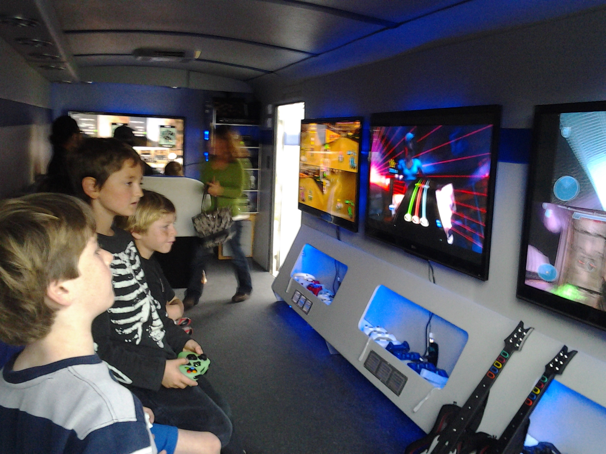
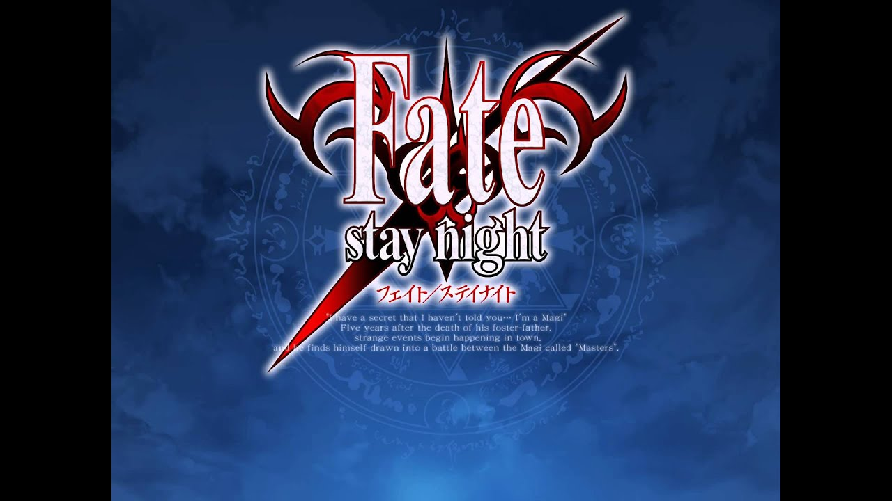
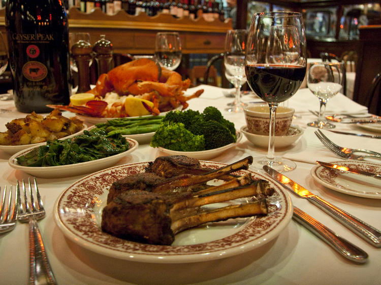

Hvem er jeg?
Jeg er Andy Nguyen og kommer fra Vietnam. Jeg flyttet til Norge da jeg var omtrent 6-7 år gammel, og siden har levet her for mest av livet mitt. Jeg er 16 år nå, studerer IT-faget på Røyken Videregående skole, og er kjempe glad i ting medie-relatert.
Vedlagt nedenfor ligger det noen vanlige spørsmål til at du kan bli bedre kjent med meg.
Hvorfor valgte jeg denne linjen?
I barndommen min, har jeg alltid tenkt på å jobbe/studere IT i framtiden min, grunnen for dette er ikke så konkret, men fordi jeg har familie og relasjoner som jobber mye med IT i livet mitt, har jeg alltid tenkt at jeg ville studere det jeg å. Det hjelper også at jeg er veldig glad i teknologi, der medie har vært en stort del av livet mitt siden jeg var ung.

Hva er mine hobbyer/interesser?
Mine hobbyer/interesser bransjer oftest til teknologi, der jeg liker å se på serie på fritiden min, og spille dataspill. I denne perioden, liker jeg mest å drive med spill som oppmuntrer deg til å logge på daglig, som Honkai: Star Rail, eller Limbus Company. Bort fra det liker jeg ikke så mye sport, og oftest sett ser på animerte serier, der jeg liker å få se innsats over de ulike bildene/frames som blir vist på skjermen, og derfor liker animasjons tunge serier som One Piece og Fate.

Hvordan ville jeg beskrive meg selv?
Formelt sagt, ville jeg beskrive meg selv som en ansvarlig person, som forstår ansvarene mine, og en hardtarbeidene person, slik at det kommer tidlig at jeg er engasjert til å få jobben klart og ferdig.
Selv om jeg er ikke alltid det mest sosiale, behersker jeg samarbeid bra og sørger oftest i små grupper at min arbeid er gjort og har oversikt for andres.
Hvor tenker du å være i 10 år?
I 10 år, vil jeg tenke at jeg er i arbeid, og dermed sørger for å ha økonomisk stabilitet, som gir meg mulighet for noen ønsker jeg har lyst å fylle. Disse kan være: reise rundt i populære turist områder; New York, Japan og Vietnam. I disse steder vil jeg gjerne oppleve kuluturen, turist attraksjoner og maten de tilbyr.
